<div class="pdid__container">
    <div class="pdid__project">
        <div class="pdid__title__space">
            <div class="pdid__title">
                <h1><u>Behind The Scenes</u></h1>
            </div>
        </div>

        <div class="pdid__btn">
            <a target="_blank"
                href="https://docs.google.com/presentation/d/1J4exabFj4kxhTMu7a-1bg3iXYmRxsljjj55M2-jqidg/edit?usp=sharing"
                class="rep__button rep__button--flex">
                Slides&nbsp; <i class="fa-regular fa-file-powerpoint"></i>
            </a>
            <a target="_blank" href="https://github.com/srinikhil99/pawsitive_id_Angular" class="rep__button
                rep__button--flex">
                Github Repo&nbsp; <i class="fa-solid fa-code-merge"></i>
            </a>
            <a target="_blank" href="https://www.pivotaltracker.com/n/projects/2644380"
                class="rep__button rep__button--flex">
                Pivotal Tracker&nbsp; <i class="fa-solid fa-arrow-up-wide-short"></i>
            </a>
        </div>

        <div class="pdid__desc__container">
            <div class="pdid__desc">
                <div class="pdid__para">
                    <h1 style="text-align: center;"><u>PawsitiveID: Discovering Canine Diversity with Precision</u></h1>
                    <br>

                    <h2><U>Introduction</U></h2><br>
                    <p style="font-size: 18px;">
                        PawsitiveID is an innovative and cutting-edge project that celebrates the remarkable diversity
                        of man's best friend, the dog. Utilizing state-of-the-art machine learning technology,
                        PawsitiveID has been designed to accurately detect and identify up to 120 different dog breeds
                        from a single uploaded image. This revolutionary platform allows users to effortlessly explore
                        the fascinating world of canine breeds, providing them with quick and reliable results, all at
                        their fingertips.
                        <br><br>
                        The heart of PawsitiveID lies in its sophisticated machine learning model, which has been
                        meticulously trained on a vast database of dog images. Through the application of deep learning
                        algorithms, the model has developed an unparalleled ability to discern subtle variations in
                        canine features, ensuring that each identification is both accurate and prompt. Whether you are
                        a seasoned dog enthusiast seeking to uncover rare breeds or simply a curious pet lover,
                        PawsitiveID promises an engaging and informative experience.
                        <br><br>
                        In addition to its exceptional breed identification capabilities, PawsitiveID boasts a
                        user-friendly interface that ensures a seamless and enjoyable journey for every visitor. The
                        straightforward image upload process ensures that even those with limited technical expertise
                        can benefit from this invaluable tool. Furthermore, PawsitiveID is optimized to function
                        flawlessly across multiple platforms, including mobile devices, making it accessible to users on
                        the go.
                        <br><br>
                        PawsitiveID represents an exciting step forward in the realm of canine recognition technology.
                        By bringing together cutting-edge machine learning and a passion for dogs, this project aims to
                        enhance our understanding and appreciation of the diverse world of canine companionship. Whether
                        you are a dog owner, breeder, or researcher, PawsitiveID invites you to embark on a journey of
                        discovery, connecting with the furry friends that have captured our hearts for generations. So
                        upload an image today and let PawsitiveID reveal the captivating identity of your furry
                        companion!
                    </p>
                    <br><br>
                    <h2><u>Project in Detail</u></h2><br>

                    <div class="tabset">

                        <input type="radio" name="tabset" id="tab1" aria-controls="machine_learning" checked>
                        <label for="tab1">Machine Learning</label>

                        <input type="radio" name="tabset" id="tab2" aria-controls="hosting">
                        <label for="tab2">Cloud + Hosting</label>

                        <input type="radio" name="tabset" id="tab3" aria-controls="wireframes">
                        <label for="tab3">Wireframes</label>

                        <input type="radio" name="tabset" id="tab4" aria-controls="frontend">
                        <label for="tab4">Design</label>

                        <div class="tab-panels">
                            <section id="machine_learning" class="tab-panel">
                                <h2>Machine Learning</h2>

                                <div class="tabset">

                                    <input type="radio" name="inner_tabset" id="tab5" aria-controls="mobileNet" checked>
                                    <label for="tab5">MobileNet</label>

                                    <input type="radio" name="inner_tabset" id="tab6" aria-controls="efficientnet">
                                    <label for="tab6">Efficientnet</label>

                                    <input type="radio" name="inner_tabset" id="tab7" aria-controls="flask">
                                    <label for="tab7">Flask</label>

                                    <div class="tab-panels">

                                        <!-- ============ Mobile Net ============= -->
                                        <section id="mobileNet" class="tab-panel">
                                            <h2>MobileNet</h2> <br>
                                            <p>
                                                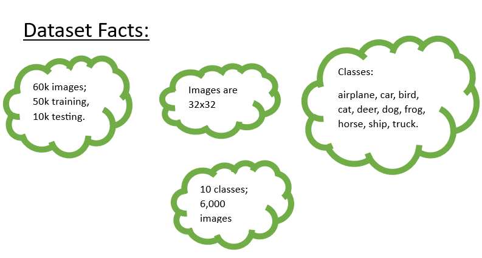 <br><br>

                                                Employing the CIFAR-10 dataset as a foundation, an advanced binary
                                                classification system was meticulously crafted to distinguish between
                                                the "Dog" and "Non-Dog" categories. Although the CIFAR-10 dataset
                                                encompasses a diverse array of ten labels, this endeavor predominantly
                                                centered on the "Dog" label. The approach adopted was one of binary
                                                labeling: images portraying dogs were assigned a label of "1," while all
                                                other categories received a "0" designation. <br><br>

                                                During the initial phases, several cutting-edge deep learning
                                                architectures such as VGG16, ResNet, and Vision Transformer (ViT) were
                                                evaluated. However, computational limitations within the Google Colab
                                                environment posed challenges to the viability of these architectures.
                                                The solution materialized with the adoption of the MobileNet
                                                architecture. Esteemed for its incorporation of depth-wise separable
                                                convolutions, MobileNet effectively alleviates computational burdens
                                                while upholding performance standards. Standard convolutions found in
                                                traditional networks were substituted with a combination of depth-wise
                                                and point-wise convolutions, resulting in reduced parameters and
                                                computational demands. <br><br>

                                                MobileNet demonstrated its prowess by achieving an accuracy rate of 89%
                                                within a mere 15 epochs. Its streamlined design proves advantageous for
                                                swift training cycles, particularly on platforms with constrained
                                                resources. <br><br>

                                                To further enhance prediction refinement, a threshold-based approach was
                                                introduced. Images exhibiting prediction scores surpassing a predefined
                                                threshold were directed to an additional model for intricate processing.
                                                Conversely, images falling below the threshold triggered an error. This
                                                strategic approach ensures a meticulous filtering process, allowing only
                                                high-confidence predictions to proceed. Consequently, the system's
                                                overall reliability and credibility are substantially bolstered.
                                            </p> <br><br>
                                        </section>

                                        <!-- =========== Efficient Net ============= -->
                                        <section id="efficientnet" class="tab-panel">
                                            <h2>Efficientnet</h2> <br>
                                            <p>
                                                EfficientNet is an efficient and powerful convolutional neural network
                                                (CNN)
                                                architecture designed to achieve better performance under limited
                                                computational resources. This architecture was introduced by <q>Mingxing
                                                    Tan</q> and <q>Quoc V. Le</q> in 2019 and is widely regarded as an
                                                effective choice
                                                for various computer vision tasks such as image classification and
                                                object detection, especially when dealing with different constraints on
                                                computational resources. <br><br>

                                                The design philosophy behind EfficientNet revolves around achieving a
                                                balanced scaling across three dimensions: depth, width, and resolution
                                                of the network, aiming for improved performance. Specifically,
                                                EfficientNet employs a technique called <q>compound scaling</q>, which
                                                involves scaling each dimension appropriately to achieve efficiency and
                                                effectiveness in the network. <br><br>

                                                EfficientNet demonstrates outstanding performance in image
                                                classification tasks and has achieved state-of-the-art results on
                                                various datasets. Its efficient design allows it to operate on
                                                resource-constrained devices like mobile and embedded systems, making it
                                                widely applicable in the field of computer vision. <br><br>

                                                There are 7 versions of EfficientNet provided. Specifically, the main
                                                differences between the different versions of EfficientNet lie in the
                                                changes to depth, width, and resolution. Lower versions (such as B0) are
                                                relatively shallower, narrower, and have lower resolution, while higher
                                                versions (such as B7) are deeper, wider, and have higher resolution.
                                                This progressive scaling allows users to choose the EfficientNet version
                                                that suits their needs based on different computational resource
                                                constraints. <br><br>

                                                We used Colab cloud platform to use remote machines and used TensorFlow
                                                machine learning framework, experimented all seven versions of
                                                EfficientNet. We record the results on train set and test set and choose
                                                a most appropriate one(B3) as our task model. </p> <br><br>

                                            <div style="overflow-x: auto;">
                                                <table>
                                                    <tr>
                                                        <th>Model Version</th>
                                                        <th>Accuracy on Train Set</th>
                                                        <th>Accuracy on Test Set</th>
                                                    </tr>

                                                    <tr>
                                                        <td>EfficientNet-B0</td>
                                                        <td>0.8702</td>
                                                        <td>0.7846</td>
                                                    </tr>
                                                    <tr>
                                                        <td>EfficientNet-B1</td>
                                                        <td>0.915</td>
                                                        <td>0.8151</td>
                                                    </tr>
                                                    <tr>
                                                        <td>EfficientNet-B2</td>
                                                        <td>0.9385</td>
                                                        <td>0.8310</td>
                                                    </tr>
                                                    <tr>
                                                        <td>EfficientNet-B3</td>
                                                        <td>0.9715</td>
                                                        <td>0.8626</td>
                                                    </tr>
                                                    <tr>
                                                        <td>EfficientNet-B4</td>
                                                        <td>0.9642</td>
                                                        <td>0.8458</td>
                                                    </tr>
                                                    <tr>
                                                        <td>EfficientNet-B5</td>
                                                        <td>0.9371</td>
                                                        <td>0.8102</td>
                                                    </tr>
                                                    <tr>
                                                        <td>EfficientNet-B6</td>
                                                        <td>0.9117</td>
                                                        <td>0.8122</td>
                                                    </tr>
                                                    <tr>
                                                        <td>EfficientNet-B7</td>
                                                        <td>0.9502</td>
                                                        <td>0.84</td>
                                                    </tr>
                                                </table>
                                            </div> <br><br>
                                            <h3>References</h3>
                                            <p>
                                                CNN:
                                                https://towardsdatascience.com/convolutional-neural-networks-explained-9cc5188c4939
                                                <br><br>
                                                The design philosophy behind EfficientNet revolves around achieving a
                                                balanced scaling across three dimensions: depth, width, and resolution
                                                of the network:
                                                https://medium.com/@nainaakash012/efficientnet-rethinking-model-scaling-for-convolutional-neural-networks-92941c5bfb95#:~:text=There%20are%20three%20scaling%20dimensions,how%20wide%20the%20network%20is.
                                                <br><br>
                                                Colab cloud platform: https://colab.google/
                                                <br><br>
                                                TensorFlow machine learning framework: https://www.tensorflow.org/
                                                <br><br>
                                                Train set and test set:
                                                https://towardsdatascience.com/train-validation-and-test-sets-72cb40cba9e7
                                            </p> <br><br>
                                        </section>

                                        <!-- =========== Flask ========== -->
                                        <section id="flask" class="tab-panel">
                                            <h2>Flask</h2> <br>
                                            <p>
                                                Flask serves as a lightweight web framework for Python, ideal for
                                                swiftly
                                                building web applications. It's particularly suitable for creating web
                                                apps
                                                that
                                                don't necessitate the intricacies of larger frameworks. Within the
                                                context
                                                of
                                                this breed identification model, Flask is utilized to establish a
                                                user-friendly
                                                web interface for interacting with the model. <br><br>

                                                <strong>Model Integration</strong>: Initially, a machine learning model
                                                is
                                                developed that can predict dog breeds from images. Common libraries like
                                                TensorFlow, PyTorch, or scikit-learn are often used to create such
                                                models.
                                                <br><br>

                                                <strong>Web Interface</strong>: Once the model is trained and prepared,
                                                Flask
                                                becomes pivotal. It's employed to construct a web interface where users
                                                can
                                                upload dog images for breed identification. <br><br>

                                                <strong>Routing</strong>: Flask empowers the definition of different
                                                routes
                                                within the web application. For instance, it manages routes for the
                                                homepage,
                                                image uploads, and displaying results. <br><br>

                                                <strong>Processing Uploaded Images</strong>: Upon a user uploading an
                                                image
                                                through the web interface, Flask receives the image and forwards it to
                                                the
                                                machine learning model for prediction. <br><br>

                                                <strong>Displaying Results</strong>: Following a model's prediction,
                                                Flask
                                                can
                                                generate a suitable template that showcases the predicted dog breed.
                                                <br><br>

                                                <strong>User Interaction</strong>: Users conveniently interact with the
                                                web
                                                application via their browsers, uploading images and receiving breed
                                                predictions
                                                in a comprehensible format. <br><br>

                                                A Python dictionary, known as <q>idx_to_class</q>, is established for
                                                mapping
                                                numerical indices to corresponding class labels. Each index is
                                                associated
                                                with a
                                                distinct dog breed. This dictionary facilitates the conversion of
                                                numerical
                                                labels into human-readable dog breed names. <br><br>

                                                Within this dictionary, numerical keys (ranging from 0 to 119)
                                                correspond to
                                                specific dog breed classes. Values linked to these keys represent actual
                                                dog
                                                breed names. For instance, 'n02085620-Chihuahua' designates the
                                                Chihuahua
                                                breed.
                                                <br><br>
                                                This dictionary expedites the translation between model predictions (in
                                                numerical indices) and their corresponding dog breed labels (in
                                                human-readable
                                                terms). This mapping streamlines understanding and communication of the
                                                breed
                                                identified by the model. Furthermore, if changes occur in the dataset,
                                                such
                                                as
                                                the addition or modification of breeds, the dictionary may require
                                                updates
                                                for
                                                accuracy. <br><br>

                                                In essence, Flask acts as a bridge connecting the intricate backend
                                                model
                                                with
                                                the user-friendly frontend.
                                            </p> <br><br>
                                        </section>
                                    </div>
                                </div>
                            </section>

                            <!-- =============== Hosting + Cloud ================= -->
                            <section id="hosting" class="tab-panel">
                                <h2>Cloud + Hosting</h2> <br>
                                <p>
                                    Pawsitive ID utilizes various Google development tools, including Firebase, Cloud
                                    Build, and Cloud Run. The user interface of the application is hosted on Firebase.
                                    The machine learning model, known as EfficientNet, was deployed using Cloud Run.
                                    This deployment turned the model into a web API with a publicly accessible web
                                    address. <br><br>

                                    For deploying the backend code to Cloud Run, the team initially created a
                                    straightforward server using the Flask framework in Python. This server was designed
                                    to receive image files through POST requests. Once received, it resized the images,
                                    converted them into arrays containing pixel data, and then used these arrays as
                                    inputs for the PyTorch model's predict method. <br><br>

                                    The trained machine learning model then analyzed the images and provided predictions
                                    by identifying the likely breed of the dog from a list of possible classes. This
                                    information was then returned as the output of the process. <br><br>

                                    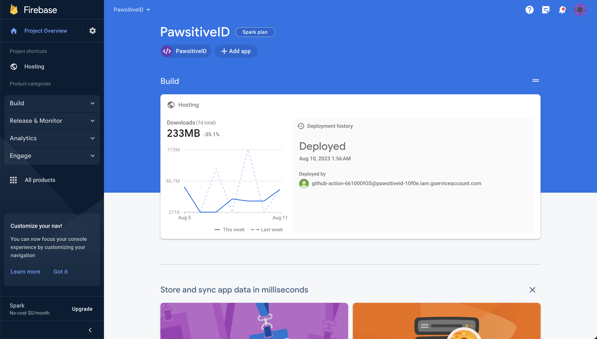 <br><br>
                                    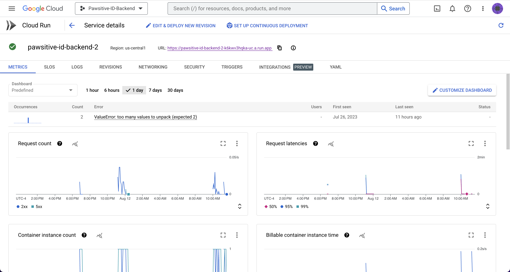 <br><br>

                                    The Flask server code, along with all the required Python dependencies and the
                                    trained model file, was packaged into a container using Google Cloud Build. This
                                    involved setting up the Google Cloud SDK and executing a build command. A Dockerfile
                                    was created, which included details about the Python dependencies, the port number
                                    to use, and the necessary commands to launch the container. <br><br>

                                    This process resulted in a self-contained, executable version of the backend code.
                                    This container was then deployed to the Google Container Registry, and from there, a
                                    Cloud Run service was established. This entire process enables the machine learning
                                    model to efficiently analyze images in real time via the Google Cloud platform.
                                    <br><br>

                                    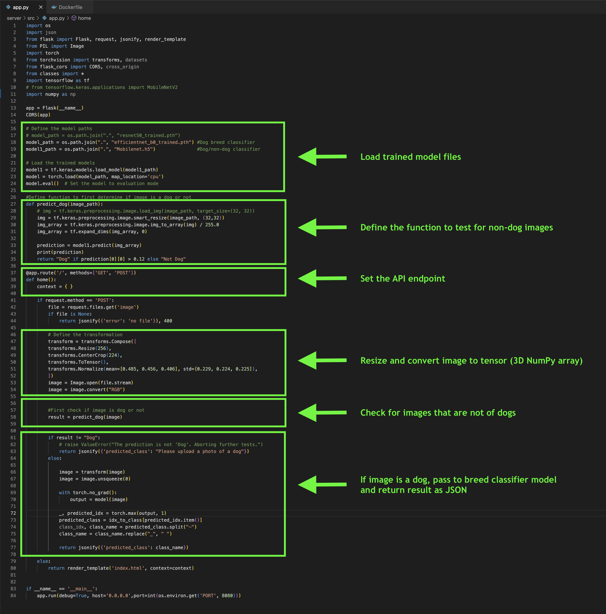 <br><br>
                                </p>
                            </section>

                            <!-- =============== Wireframe ====================== -->
                            <section id="wireframes" class="tab-panel">
                                <h2>Wireframes</h2> <br>
                                <p>
                                    The task of designing initial wireframes for the website using the <q>Balsamiq
                                        tool</q>.
                                    The website comprises four distinct main pages, each catering to specific functions:
                                    <br><br>

                                    1. <strong>Home Page</strong>: Serving as the point of entry, this page allows users
                                    to upload images of dogs for breed identification. The layout divides into two
                                    sections. On the left, the "PawsitiveID" logo is showcased alongside a succinct
                                    project description. On the right, the interface is compartmentalized into three
                                    segments: a photo preview pane, an upload button complete with the uploaded file
                                    name, and a results display presenting the dog's identified breed. <br><br>

                                    2. <strong>About Us Page</strong>: Dedicated to offering insights into the people
                                    driving the project, this page is bifurcated. The upper portion imparts user
                                    guidance, while the lower section introduces the talented team responsible for the
                                    website's creation. <br><br>

                                    3. <strong>BTS Page (Behind the Scenes)</strong>: Dubbed the "Behind the Scenes"
                                    page, it provides an intricate view into the project's development journey. A
                                    step-by-step breakdown elucidates the team's efforts and the tools employed.
                                    Additionally, this page houses essential links, including presentation slides, the
                                    GitHub repository housing the project's code, and the Pivotal Tracker utilized for
                                    project management. <br><br>

                                    4. <strong>Gallery Page</strong>: Functioning as a visual repository, this page
                                    showcases an array of dog breed images. This serves as a tangible demonstration of
                                    the website's breed identification capability. <br><br>

                                    In essence, the creation of foundational wireframes through
                                    the utilization of "Balsamiq". These blueprints chart the course for the website's
                                    layout and functionality.
                                </p> <br><br>

                                <div class="slider">
                                    <div class="slide">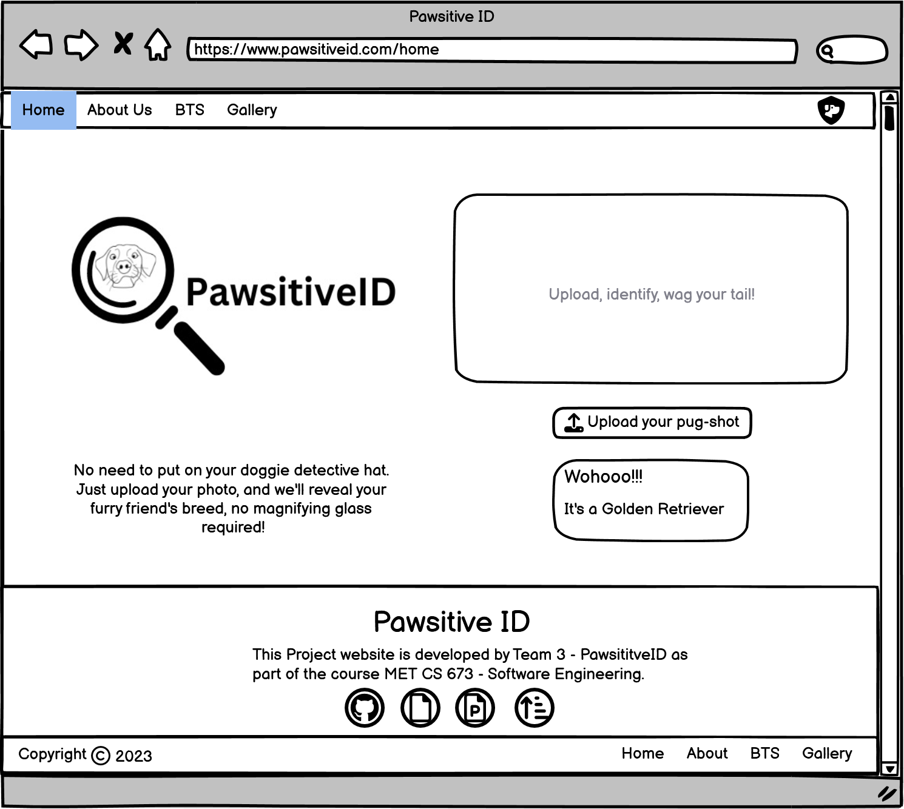</div>
                                    <div class="slide">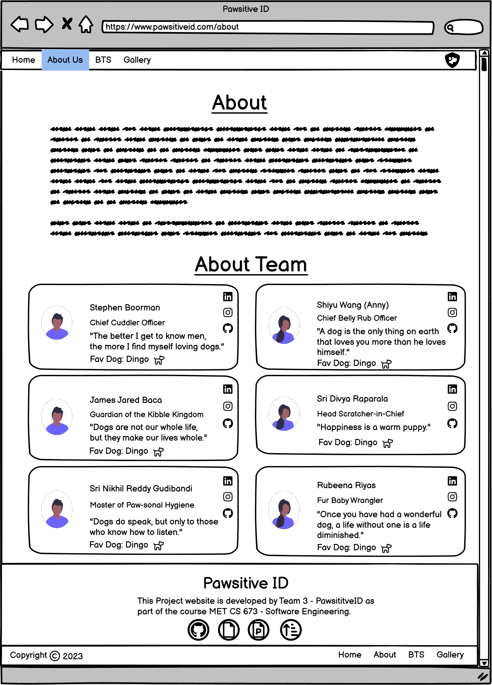
                                    </div>
                                    <div class="slide">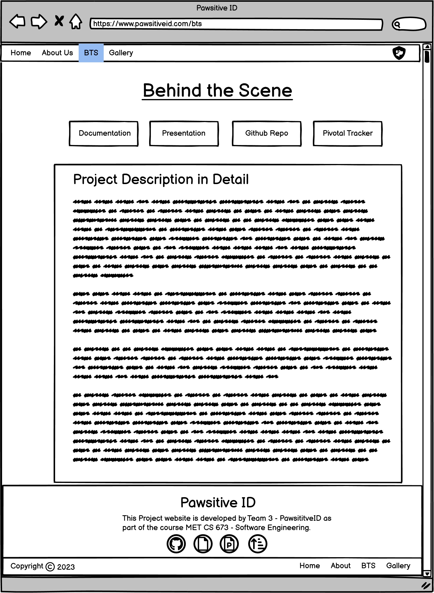</div>
                                    <div class="slide">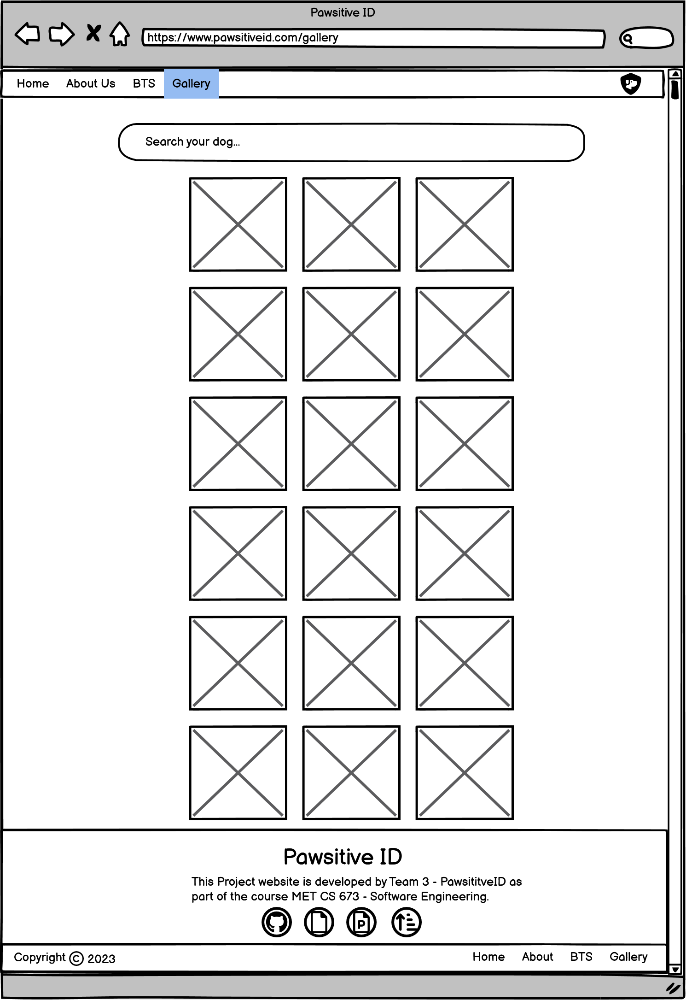
                                    </div>
                                </div>
                            </section>

                            <!-- ================= Frontend ===================== -->
                            <section id="frontend" class="tab-panel">
                                <h2>Designing Website</h2> <br>
                                <p>
                                    Undertaking the transition from wireframe blueprints to a fully operational website
                                    constitutes a significant endeavor. The pivotal task at hand involved selecting the
                                    appropriate technological framework, ultimately leading to the adoption of Angular
                                    for the front-end development of the PawsitiveID website. The choice of Angular was
                                    underpinned by its capacity to deliver stellar performance, versatility,
                                    scalability, and expedited development. <br><br>

                                    The development process saw the creation of a total of seven distinct components,
                                    each fulfilling a specific role within the site's architecture: <br><br>

                                    1. <strong>Header Component</strong>: Serving as a persistent top navigation bar
                                    across all
                                    pages, the header component houses the logo and navigation menu, encompassing Home,
                                    About Us, BTS, and Gallery sections. <br><br>

                                    2. <strong>Footer Component</strong>: Positioned at the bottom of every page, the
                                    footer
                                    component features fixed links to the GitHub repository, Google Slides, and Pivotal
                                    Tracker. The navigation menu includes Home, About Us, BTS, and Gallery. <br><br>

                                    3. <strong>Home Component</strong>: This specialized component exclusively caters to
                                    the
                                    functionality of the home page, designed to offer a unique user experience that is
                                    distinct from other site pages. <br><br>

                                    4. <strong>About Us Component</strong>: Similar to the Home Component, the About Us
                                    Component is
                                    exclusively tailored to the About Us page, ensuring seamless functionality and
                                    presentation. <br><br>

                                    5. <strong>BTS (Behind the Scenes) Component</strong>: Dedicated solely to the BTS
                                    page, this
                                    component provides a focused user experience that aligns with the purpose of the
                                    page. <br><br>

                                    6. <strong>Gallery Component</strong>: Devoted to the Gallery page, this component
                                    ensures that
                                    users can seamlessly explore the collection of dog breed images in an optimized
                                    manner. <br><br>

                                    7. <strong>Page404 Component</strong>: This specialized component is designed to
                                    manage instances
                                    of unexpected network issues or scenarios when the website experiences technical
                                    difficulties. It also caters to instances when users attempt to access URLs that are
                                    not part of the site. <br><br>

                                    The website has been meticulously designed to ensure responsiveness across a
                                    spectrum of devices, encompassing desktops, laptops, and mobile devices. This
                                    undertaking involved an extensive research phase, where a comprehensive
                                    understanding of various device specifications and user behaviors was acquired. This
                                    knowledge was then leveraged to shape the site's design and development process in a
                                    manner that accommodates the unique characteristics and requirements of each device
                                    category. The end result is a website that seamlessly adapts and performs optimally
                                    regardless of the device in use. <br><br>

                                    In culmination, the realization of this final product necessitated the meticulous
                                    execution of hundreds of tasks, intricately interwoven with the authoring of
                                    thousands of lines of code. The result stands as a testament to the amalgamation of
                                    strategic decision-making, technical expertise, and creative vision. <br><br>
                                </p> <br><br>

                                <div class="slider1">
                                    <div class="slide1">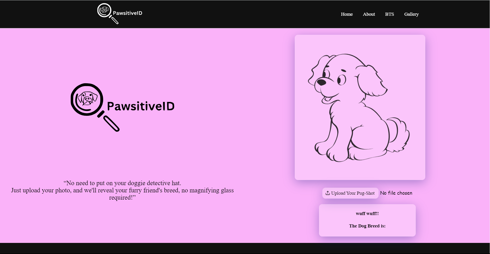</div>
                                    <div class="slide1">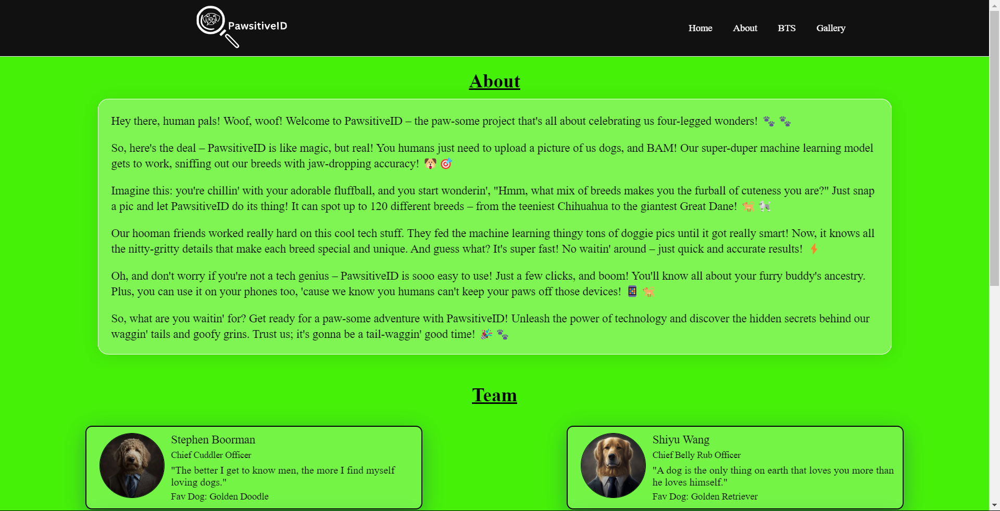
                                    </div>
                                    <div class="slide1">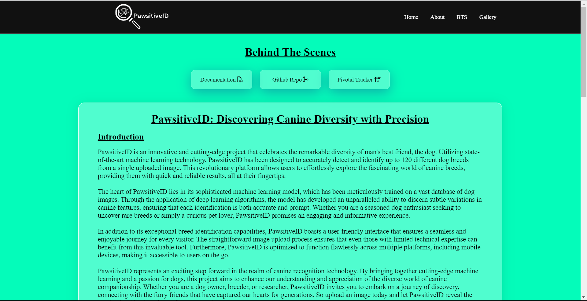</div>
                                    <div class="slide1">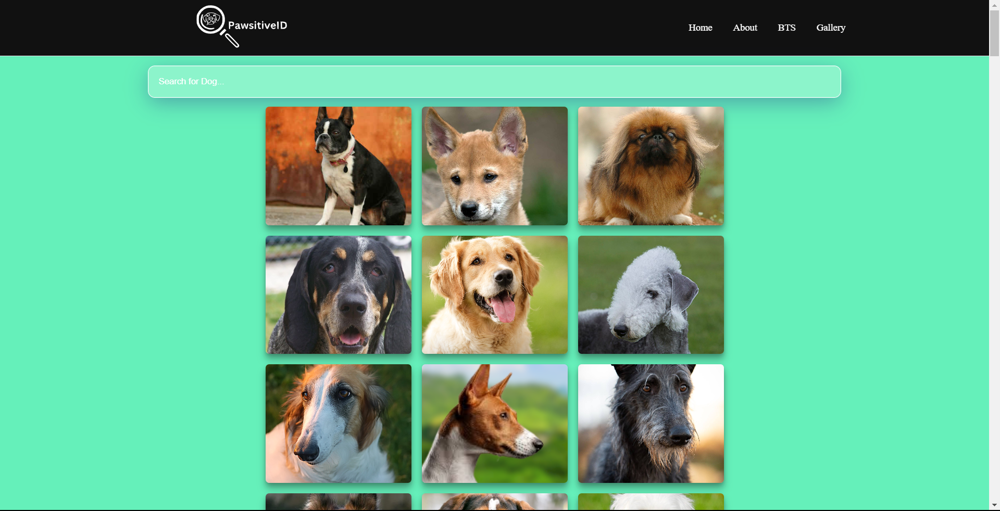
                                    </div>
                                    <div class="slide1">
                                    </div>
                                    <div class="slide1">
                                    </div>
                                </div>

                            </section>
                        </div>

                    </div>

                </div>
            </div>
        </div>
    </div>
</div>
